From Research to the Classroom (and Back): Bettering Assessment Practice and Policy
Robert L. Linn Memorial Lecture
Jonathan Templin, Ph.D.
Professor, Department of Educational Psychology, University of Kansas
Talk Overview
- Alternate (jargony) title: Stories of Dimensionality
- What are/why we need dimensions
- What dimensions have to do with education
- The nature of scores
- The difficulty of assessing multiple dimensions
- Can large scale assessment be designed to help instruction and accountability?
- But first...
Honoring Dr. Robert L. (Bob) Linn
- A lifetime of contributions to education
- Blended research, practice, and policy to better all three
- Of note for today's lecture, on the use of tests for accountability purposes, Linn (2000; Ed Researcher):
"Don't put all of the weight on a single test. Instead, seek multiple indicators. The choice of construct matters and the use of multiple indicators increases the validity of inferences based upon observed gains in achievement." (p. 15)
"Recognize, evaluate, and report the degree of uncertainty in the reported results." (p. 15)
Stories of Dimensionality
My Background
- Professor at the University of Kansas, Department of Educational Psychology
- Research, Evaluation, Measurement, and Statistics Program
- Research foci:
- Multidimensional psychometric methods
- Applications of Bayesian statistics
- Also known for:
- Cognitive Diagnosis/Diagnostic Classification Models
My Philosophy
- I'm a psychometrician who thinks our current system of assessment for accountabilty is bad for education
- We test students far too much relative to what we get out of each test
- From Smarter Balanced: https://portal.smarterbalanced.org/library/en/estimated-testing-times.pdf
- Current system of testing for accountability is unnecessary in light of recent policy and psychometric advances
- For a test to be more useful, it must:
- Not consume large amounts of time for instruction (including test preparation!)
- Tell stakeholders more about the student
- Do so in a short amount of time (immediately, if possible)
- But...building assessments that provide more information is very difficult in practice
Defining Terms I Will Use Today
- Trait/Skill/Attribute/Ability (ahem...Dimensions):
- Scores are numeric representations of traits
- Assessment/test: A collection of tasks used to quantify scores
- Item: A generic term for an assessment task
- Person/student/examinee/respondent: The person taking the assessment
- Psychometric Models/Methods: The mathematical linkage between the student performance and their score(s)
Dimensionality
Ok Google: Define Dimension
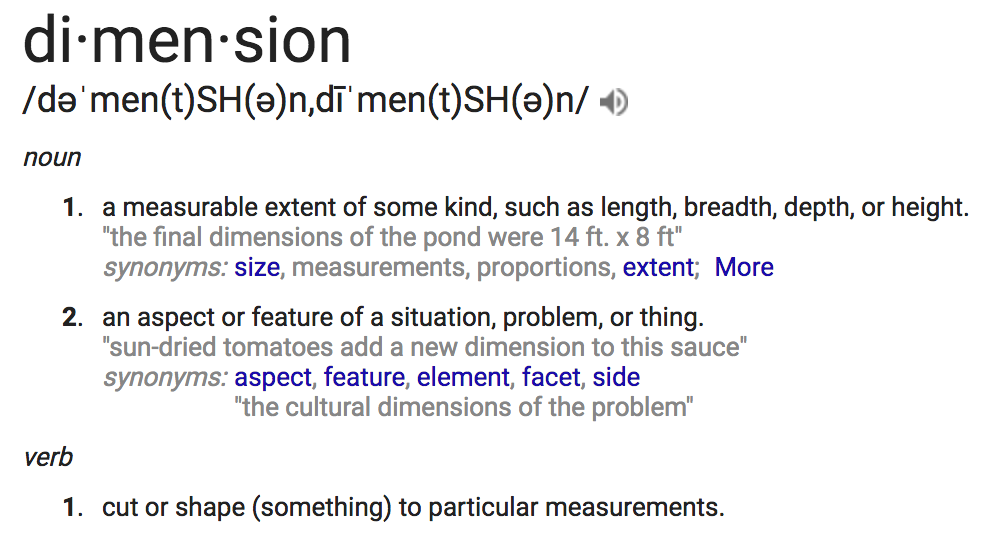
Dictionary Definition, Continued
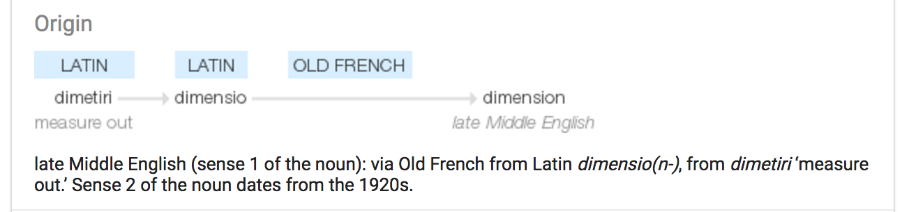
Dimensionality in Educational Testing
- The dimensions of interest in educational testing are represented by the scores of a test
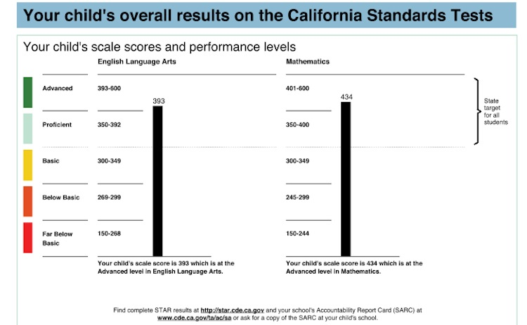
{kind=link}
On Test Scores
- Once given, test scores often are treated as having charactaristics similar to that of physical measurements, like length/height:
- Assumed to be precise
- Assumed to be an accurate representation of the label for the score ("Math" means overall mathematics ability)
- But, test scores and precise physical measurements are seldom the same...
- Scores have error (sometimes a lot of error) -- indexed by reliablity or standard error of measurement
- The meaning of the score may not be accurate
- Scores have no true zero point
On Error in (Simple) Physical Measurements
- To measure the height of an object, a ruler or tape measure can be used
- Small amounts of error are often present either in the ruler (systematic) or in the observer (random) 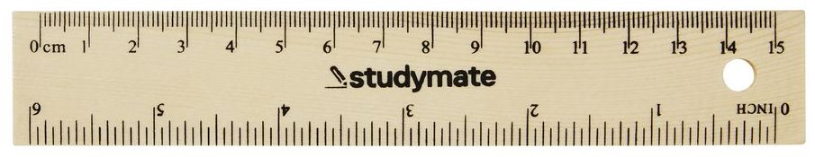
On Error in Test Scores
- If we could make an analogy of height and test scores, then the ruler would be different
- Rather than using one very precise and consistent ruler, we would have to use a set of smaller and more inconsistent measures
- Think of a set of smaller rulers, each approximately one inch in length...but some are larger than an inch and some are smaller than an inch
- These small rulers are like the items of a test — each contributes some information to the score, but also each has error
- The overall length measure might then have a lot of error...
- Often, the amount of error in a score depends on the location of the score itself (harder to measure those at the ceiling/floor)
Test Scores with Error
Sometimes there is a little error in scores...
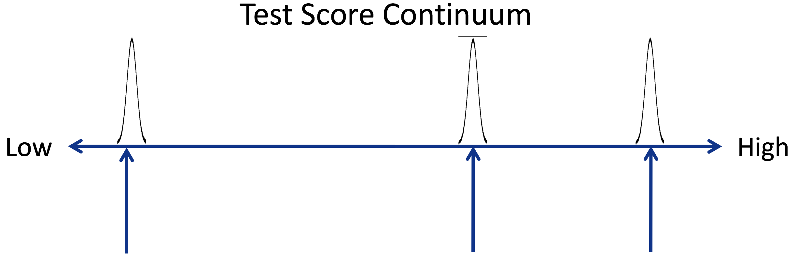
Test Scores with Error
Sometimes there is a lot of error in scores...
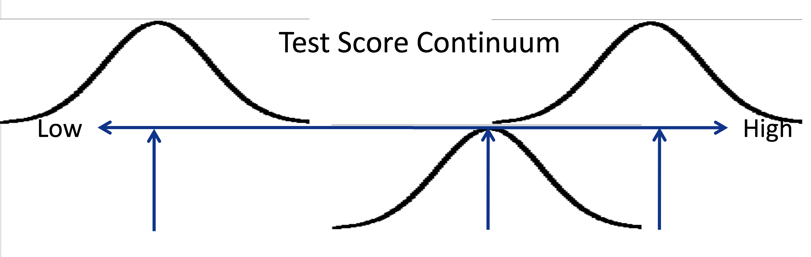
Scores are Summaries of Distributions
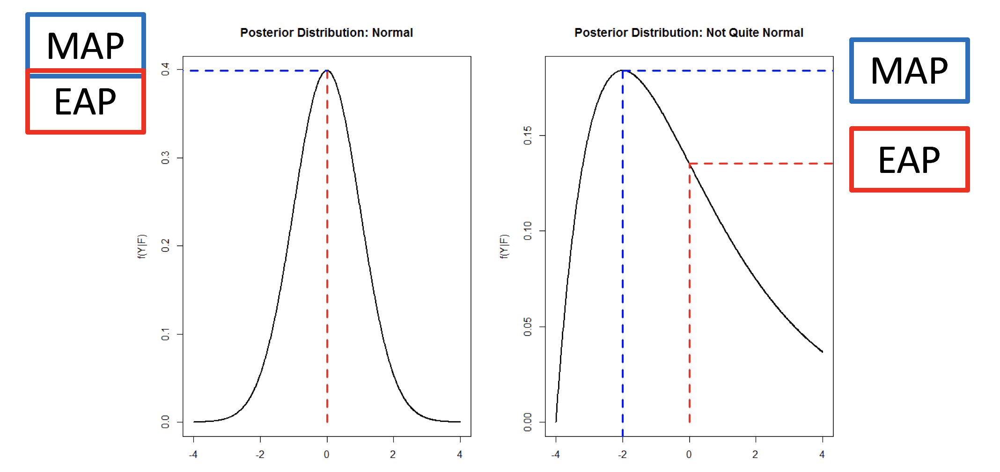
There Is No Score
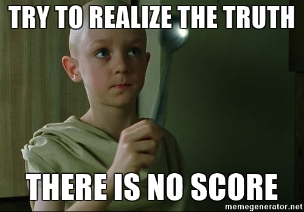
Scores vs. Cut Points
Mistaking this:
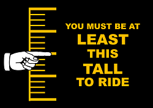
For this:
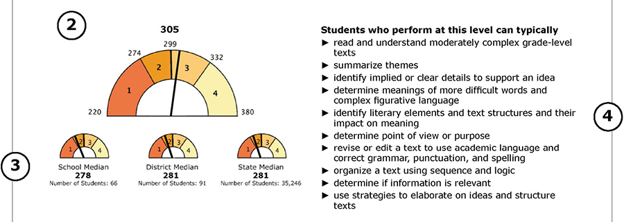
Image source:
http://www.ksassessments.org/scorereports
An Example from the GRE
Data from https://www.ets.org/s/gre/pdf/2010-11_gre_guide.pdf
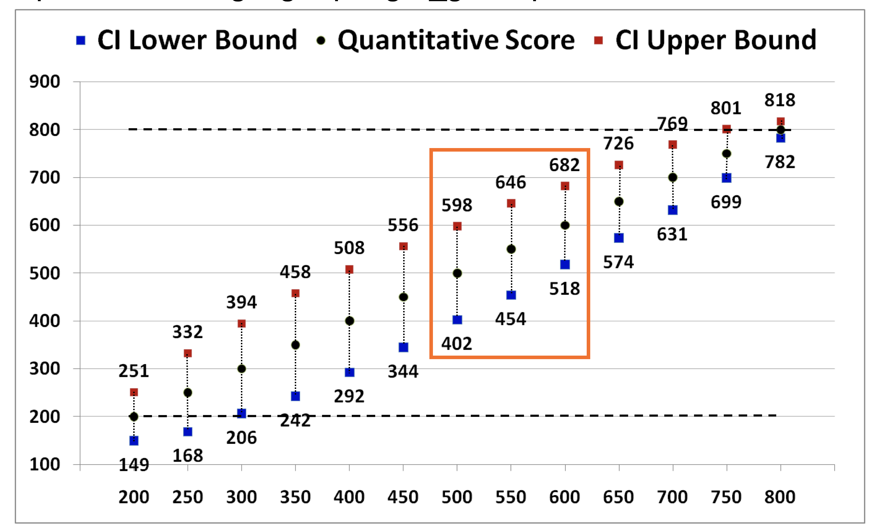
Image source: Lesa Hoffman, 948, Lecture 1
http://www.lesahoffman.com/CLP948/index.html
More from the GRE
If scores have error, where is that noted on the score report?
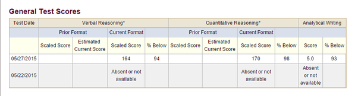
Recall Linn (2000, p. 15): "Recognize, evaluate, and report the degree of uncertainty in the reported results."
On the Meaning of the Score
What the score represents is dependent upon the items of the test
- Unlike many physical measurements, few educational constructs are easily defined
- For instance, take mathematics
- In accountability testing, often one math score per assessed grade is given
- What contributes to that score? (Test blueprint and specifications)
- Are scores comparable across grades? Across years? Across states?
- Should there be more than one score?
We Often Create Our Reality
- Building assessments involves trial and error
- Sometimes, test items do not fit the psychometric model used for assessment
- Often, the poorly fitting items are omitted from a test
- The test then takes the form of the items that are left
- Many times this is forgotten as traits become living things
Reality Bites Back
Scores from the same person are often correlated
- Sometimes, that correlation is so high that the scores are indistinguishable
- In such cases, correlated scores really are not distinct
- Traits must have a basis in reality
- To narrow of definition is just as problematic as to wide
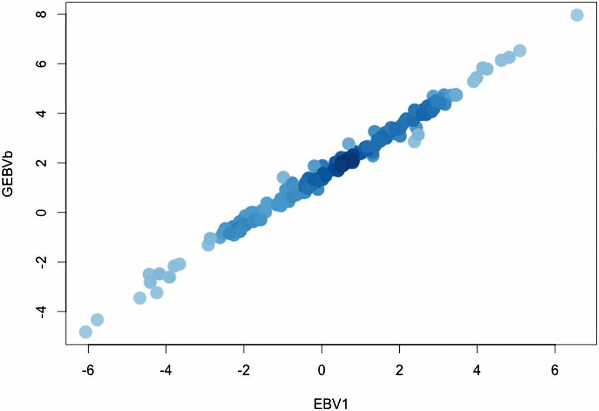
Section Summary
- Dimensions are the scores given from tests
- Test scores aren't like physical measurements
- Scores often contain error (how much depends on the score itself)
- Scores represent our attempt to put numbers on unobservable traits
Common Assessment Specs
Common Assessment Specifications
- Most large-scale tests are scored using a unidimensional psychometric model
- Unidimensional: One trait thought to underlie the items
One (main) score given to examinees
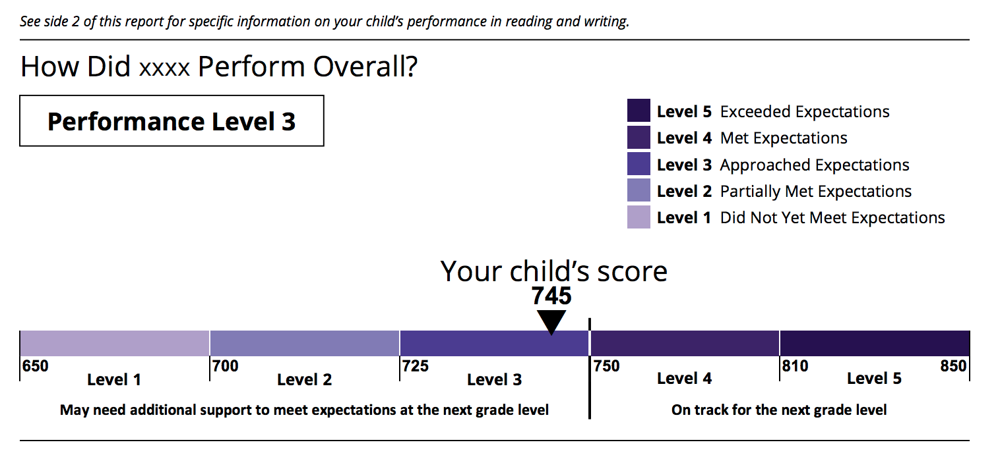Sometimes more information is given...we will return to this shortly
Assessment Specification Diagram
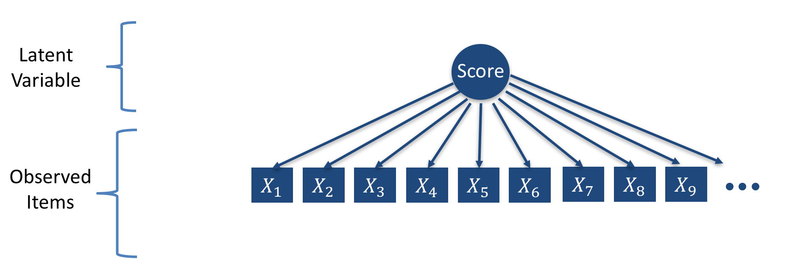
Definitional Specificity of a Trait
- The definitional specificity of a trait is referred to as the grain size
- Driven by the level of specificity with which one desires to make inferences about students on the basis of their test score(s)
- What you want to know about a student
- In current summative testing, the grain size is often very coarse
- 4th Grade Math
- 7th Grade English Language Arts
- So, if more detailed information is needed, a more specific definition is needed:
- A math example: https://turnonccmath.net/
But Not All Tests Can Be Unidimensional
As constructs and standards become more detailed, it becomes harder to create items that align well to one dimension
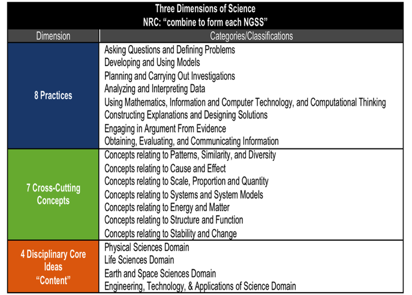
Arguments about Dimensionality
Two vs. Three Dimensions of Earth
Dimensionality in Politics
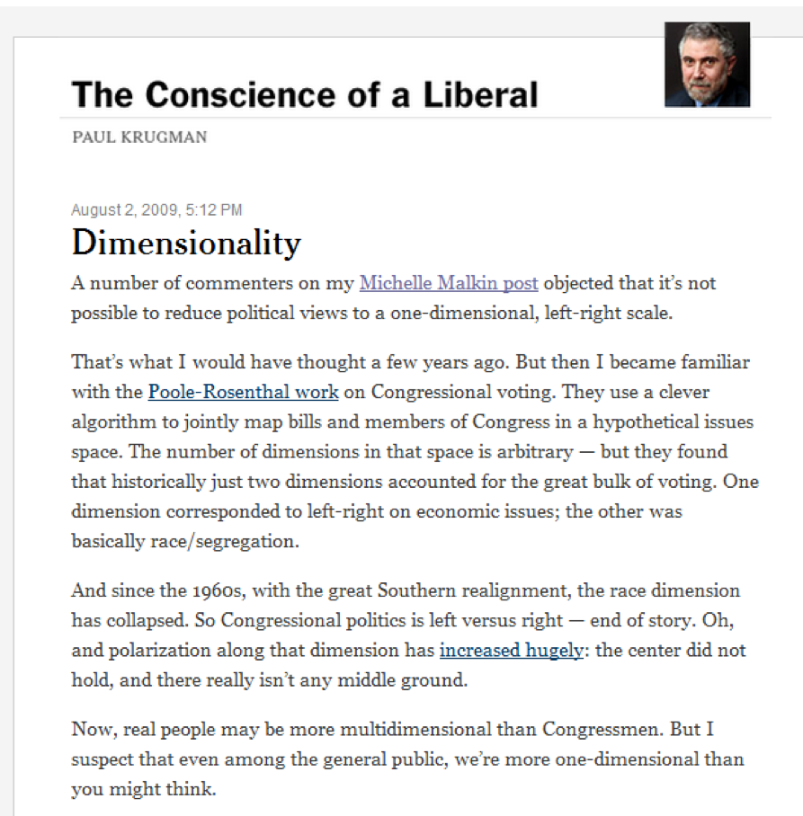
Dimensionality in Education
- Dimensionality is number of traits assessed by a test
- The utility of the outcome is key to the usefulness of a test
- For learning and growth, unidimensional tests are generally at too abstract of a level to present actionable evidence to help students
- For too long we have tailored our tests to fit existing psychometric models, or mainly, software choices
The field has advanced to a state where this is no longer necessary
Recall Linn (2000, p. 15): "Don't put all of the weight on a single test. Instead, seek multiple indicators. The choice of construct matters and the use of multiple indicators increases the validity of inferences based upon observed gains in achievement."
Section Summary
- Traits (and the scores that represent them) are made by definition (grain size)
- Most large-scale tests assess one trait, providing one score
- As definitional grain size narrows, more traits (and scores) are needed to describe behavior
- Additional scores can be good things!
Why Assess Multiple Dimensions?
Motivations for Multiple Dimensions
Motivations for Multiple Dimensions
- Additional information needed about student abilities
- Nature of some items necessitates multiple dimensions
- Constructs/standards are inherently multidimensional
- Key questions:
- What dimension(s) do you want to measure?
- Are the dimension(s) separable?
- What gets in the way of measuring those dimension(s)?
Additional Information Needed
Additional information needed about student abilities (i.e., definition "grain size")
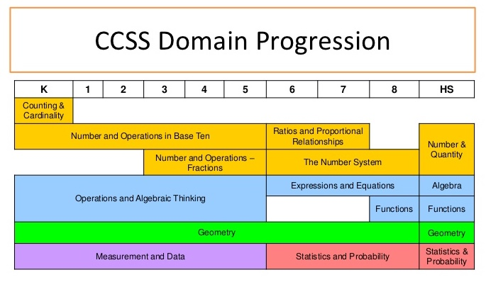
Item Features are Multidimensional
Nature of some items necessitates multiple dimensions (e.g. testlets)
- Example from PARCC practice test for ELA: https://parcc.pearson.com/practice-tests/english/
Technical details:
Typical IRT Model
$$P\left(Y_{pi} = 1 \middle| \theta_p \right) = \frac{\exp\left(\theta_p - b_i \right)}{1 + \exp\left(\theta_p - b_i \right)}$$Basic Testlet IRT Model
$$P\left(Y_{pi} = 1 \middle| \theta_p, \gamma_p \right) = \frac{\exp\left(\theta_p - b_i + \gamma_p \right)}{1 + \exp\left(\theta_p - b_i + \gamma_p \right)}$$Item Content is Multidimensional
Consider the Math Item from the PARCC Practice Test
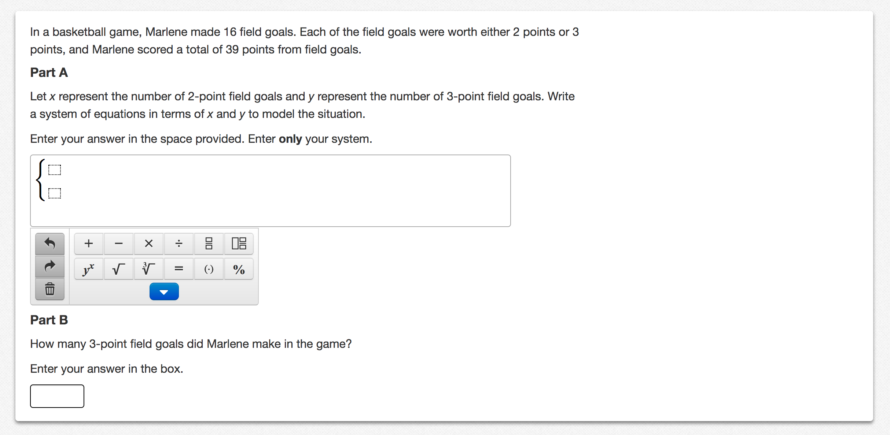
Image source:
https://parcc.pearson.com/practice-tests/math/
(Algebra I Practice Test)
Possible Multidimensional Model
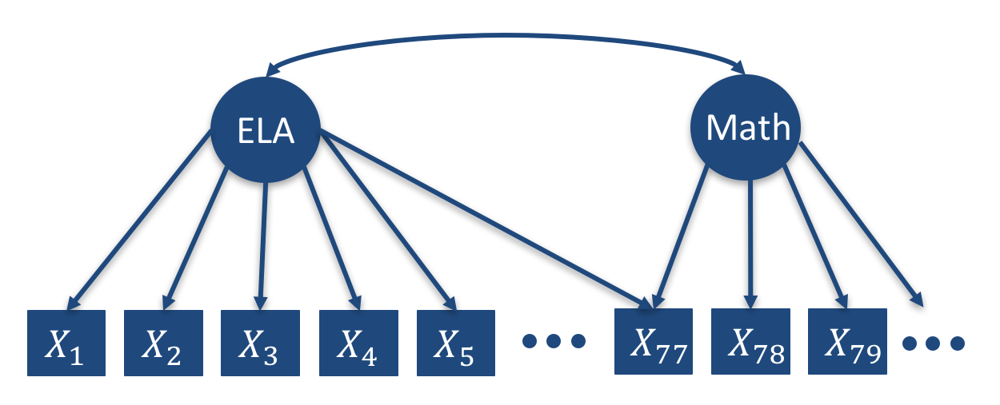
Multidimensional Model for the Math Item
Multidimensional Item Characteristic Curve
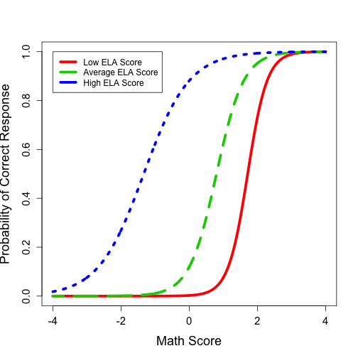Multidimensional IRT Model
$P\left(Y_{pi} = 1 \middle| \text{ELA}_p, \text{Math}_p \right) = $ $$\frac{\exp\left(\beta_{0,i} + \beta_{ELA,i}\text{ELA}_p + \beta_{Math,i}\text{Math}_p + \beta_{Math \times ELA,i} \text{Math}_p \text{ELA}_p \right)}{1 + \exp\left(\beta_{0,i} + \beta_{ELA,i}\text{ELA}_p + \beta_{Math,i}\text{Math}_p + htt\beta_{Math \times ELA,i} \text{Math}_p \text{ELA}_p \right)}$$
Standards are Multidimensional
- Example: Next Generation Science Standards
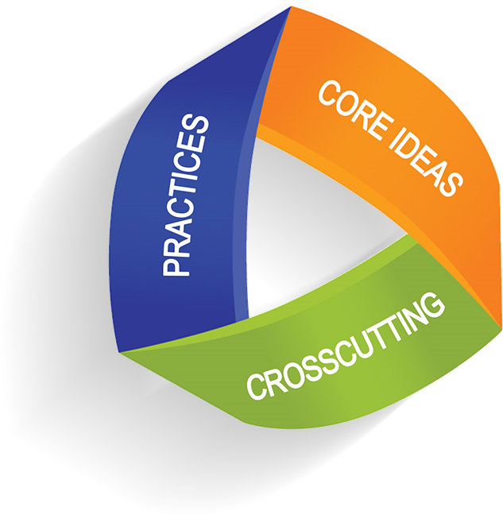
Section Summary
- Sometimes, a single score is not sufficient to characterize student test performance, knowledge, or behavior
- Next Generation Science Standards have multiple dimensions
- Core ideas
- Crosscutting concepts
- Practices
Multidimensional Assessment Practices
Most Operational Multidimensional Models
- Most large-scale summative testing programs are multidimensional...
- Multidimensional by a series of unidimensional tests
- Separate assessment of multiple dimensions
- Example: Assessment of ELA separate from Mathematics
- Even testing programs claiming new multidimensional models estimate each dimension separately
- Dynamic Learning Maps
- Bad pratice: Taking a single dimension and turn it into multiple dimensions
- Create single score with all items of an assessment (a unidimensional model)
- Then create subscores by taking items from different content domains/strands (implying multiple dimensions)
- Subscale scores are necessarily at a finer grain size, but...
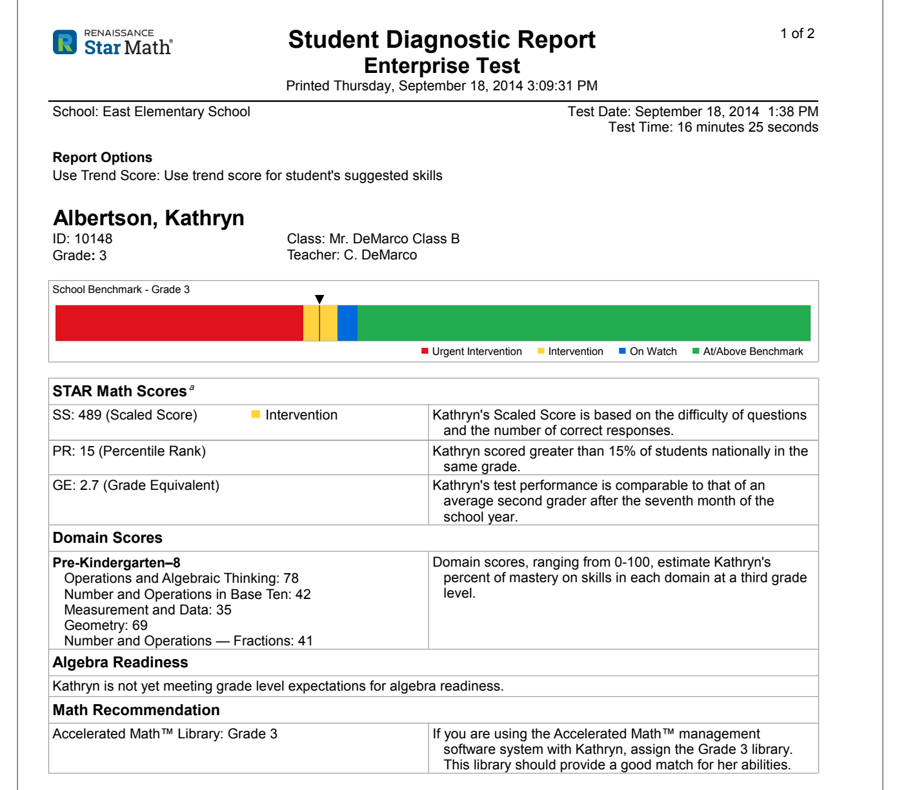
Image source:
http://doc.renlearn.com/KMNet/R0053249615EE616.pdf
(p. 8)
Much Ado about Subscores
Harvesting subscale scores from unidimensional tests is problematic:
- A uni- and multidimensional model both cannot be correct
- If the unidimensional model was appropriate for the test:
- Subscale scores should see correlations approach 1.0 as the number of items increases
- If the multidimensional model was appropriate for the test, then the unidimensional overall (total) score would not be valid
- Either needs some type of arbitrary method for combining multiple scores (think Body Mass Index: total of height and weight of a person)
- Or, if calibrated with a unidimensional model, the score is likely not as reliable as is being reported
- Subscale scores likely represent error
- Yet they are what are asked for the most by educators
- Grain size is information!
Section Summary
- None of the commonly-used current large-scale assessment practices allows multiple traits to be measured by an item
- Items built for Next Generation Science Standards assessment inherently will measure more than one trait
- One core concept
- One or more cross-cutting ideas
- One or more practices
Multidimensional Psychometric Models
Multidimensional Model Familes
Models That May Work for Assessing Multiple Dimensions
- Multidimensional IRT Models (MIRT)
- Diagnostic Classification Models (DCMs)
- Knowledge Space Theory
- Of note: each is part of a larger family of models called Bayesian Inference Networks (BayesNets)
- Graphical models — similar versions used in machine learning and computer science
The Curse of Dimensionality
- Although a multidimensional model sounds straightforward to apply, there is a catch...
- In general, as more dimensions are measured by a test, more items are needed to reach a reliable level of measurement for each dimension
- More items means more time for testing
- 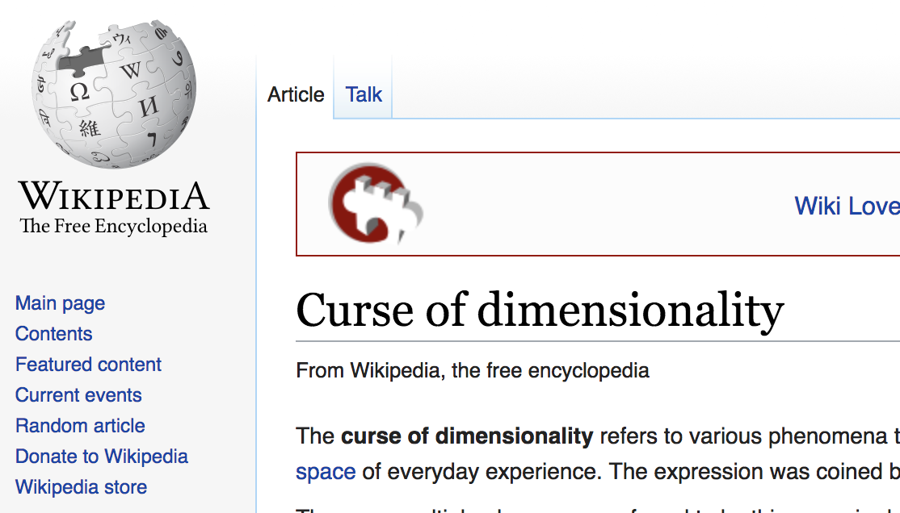Image source: https://en.wikipedia.org/wiki/Curse_of_dimensionality
More Dimensions \(\longrightarrow\) More Items
Diagnostic Classification Models
DCMs represent student abilities with ordinal categories instead of scores
- Why: In short it takes fewer items to classify a person with high reliability than it does to provide a continuous score with a reasonable reliabilty
- How: Grouping students into homogeneous categories (masters vs. non-masters)
- Students within a category are considered to have the same amount of ability
- The masters category contains students that have more ability than the non-masters category
- Goal: To provide multiple "scores" per test with a high reliabilty
- Goal: To make sure tests are of a reasonable length
Names for Diagnostic Classification Model
DCMs have been called by many names:
- Cognitive diagnosis models
- Skills assessment models
- Cognitive psychometric models
- Latent response models
- Restricted (constrained) latent class models
- Multiple classification models
- Structured located latent class models
- Structured item response theory
Score Reliability Comparison
From: Templin and Bradshaw (2013; Journal of Classification) 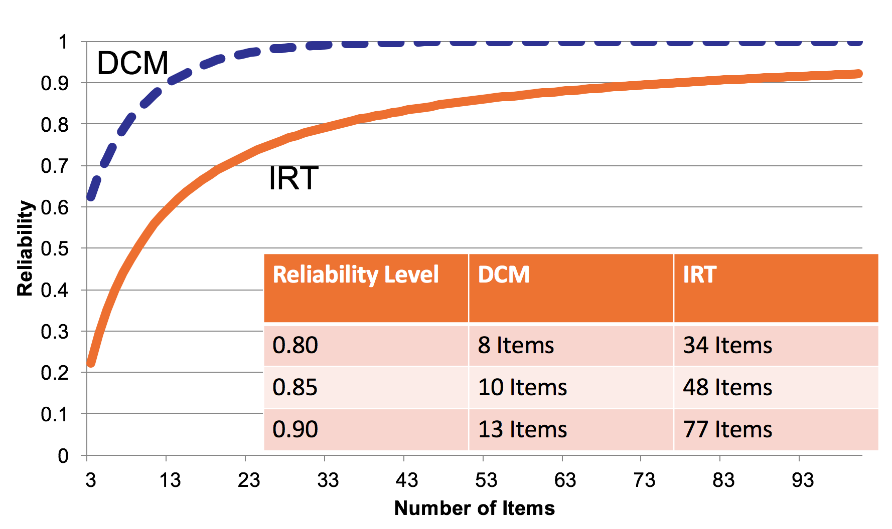
DCM Reliability
Note: Other Versions Exist
- The categorization of scores in DCMs brings about the reliability result on the previous slide
- Any categorization of a continuum will also bring about a similar result
- DCMs attempt to divide a continuum based on features of the data
- Arbitrary cuts could also be used
- More than two categories can also be used
- More categories means less overall reliability
- More categories means less overall reliability
Example of DCM Score Report
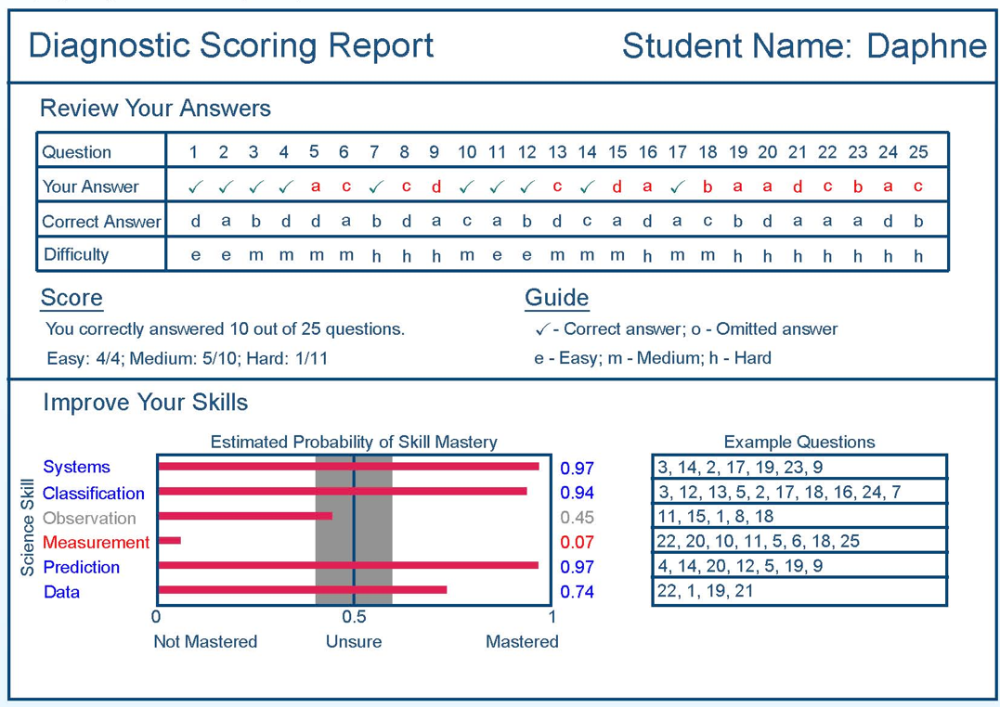
DCMs in DLM
DCMs are used in the Dynamic Learning Maps Alternate Assessment System: http://dynamiclearningmaps.org/
- Assessment consortium for students with significant cognitive disabilities
- Based on concept of learning maps
- Does not report at the skill level (collections of skills, but only for some states)
Learning Maps
A learning map is:
- A collection of skills to be mastered, along with
- The connections between skills
The map indicates the skills that must be mastered prior to learning any new skill
Example Portion of the DLM Learning Map
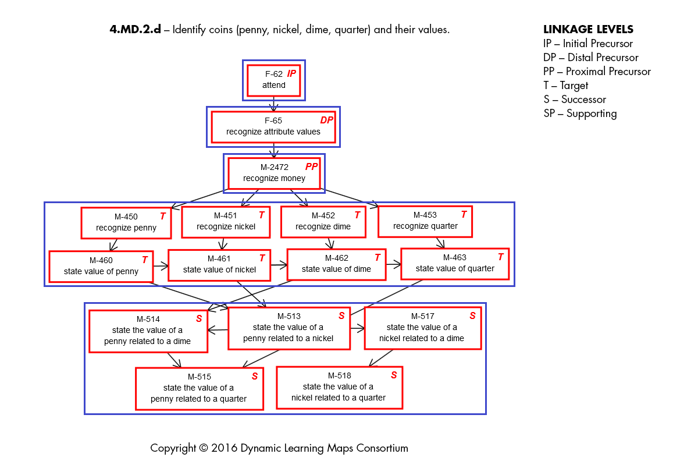
DLM Implementation
The Missing Learning Map
Although the learning map idea behind DLM is very important, issues have remained in its implementation:
- The map itself is not directly used in the scoring process
- The size of the initial map was far too big to align (some 6,000+ latent variables)
- The needs of the consortium necessitated two types of tests
- Integrated throughout the year
- Year end only
- The population of students necessitates short tests
- The states involved were unprepared for such a change in test results
Section Summary
- Assessing multiple dimensions simultaneously is difficult
- More dimensions necessitates one or more of:
- Changes to the score (e.g., from continuous to categorical)
- More items on the assessment
"Innovations" in Policy
The Every Student Succeeds Act (ESSA)
The ESSA was signed into law by President Barack Obama on December 10, 2015.

ESSA
Notable portions of the law with respect to accountability:
- States have flexibility in format of assessment
- Can include multiple interim assessments throughout the academic year
- Ability to pilot innovative approaches to statewide assessments (up to seven states)
- Multiple assessments (e.g., curriculum-embedded, interim, or through-course tests) given throughout the year
- May be based on a subset of grades/subjects
- Up to 8 years to implement statewide
- The ESSA could be the means to better testing and instruction, but...
A Plot Twist in the ESSA
It remains to be seen how the Trump Administration will handle the ESSA:
- Recent Edweek Headline: What Happened to ESSA's Innovative Testing Pilot? (By Alyson Klein on August 8, 2017)
- See: http://blogs.edweek.org/edweek/campaign-k-12/2017/08/essa_innovative_testing_pilot_what_happened_devos_department.html
Informing Instruction and Accountability
Merging Psychometrics and Policy
What an Innovative Assessment Could Look Like:
- It could be learning map-based or informed, but may not need the "map" portion
Multidimensional Standards
- Each square is a latent variable
- Mastery status can be attained instead of scale score
- All that matters: Student has learned material in each square
Modularized Assessment
- Can assess each latent variable throughout school year
- Students who are masters of content can move on
- Students who need remediation can take earlier material
Assessment Throughout Academic Year
- Students are assessed proximal to when content is learned in curriculum
- Later content depends on mastery of earlier content, all progress counts for accountability
- My argument: All tests are summative, only differentiated by grain size of latent variable
Instant Results Needed
Because each test is tied to curriculum, results must be instant:
- If a student is found to be a master: they move on
- If a student is not yet a master: they get remediation
Results Used for Summative Accountability
Goal for students: Master as many concepts as possible
- Profile-based standards can be accomplished
- Standard setting takes a different form
- Students mastering more complex material can show evidence for simpler material
Results Used for Growth
Growth is simple concept:
- What do you know now that you did not know before?
- Understandable metrics that do not yield notable nonsense results
Overall Benefit
Tests can be integrated into instruction and the curriculum
- No need for "testing windows" and exam preparation
- Teaching to the test means teaching the curriculum
Concluding Remarks
Concluding Remarks
- The lag time from research to practice can be long, and for good reason
- But, testing is so ubitquous (and expensive), that providing more information is necessary to continue
- The interplay between research, practice, and policy is critical
- Research: Development and evaluation of methods and models
- Practice: Assessment literacy and use by those who impact education
- Policy: Designing laws that enable better and less intrusive assessment systems
- From Linn (2003, Ed Researcher/AERA Presidential Address): "True accountability means broadly shared responsibility, not only among educators and students, but also administrators, policymakers, parents, and educational researchers."
Thank you!
Questions? Comments? Complaints?
- Email: jtemplin@ku.edu
- Website: https://jonathantemplin.com
- Twitter: @DrJTemplin
- Slides available: https://goo.gl/rfTyiU
- Built in R with the slidify package: http://slidify.org/
- Talk script available: https://github.com/jonathantemplin/LinnMemorialLecture2017